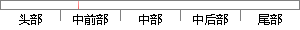

OK6410开发板上集成了多种高端接口，如复合视频信号、摄像头、USB、SD卡、液晶屏、以太网，并配备温度传感器和红外接收头等。
片段位置图

相似结果
相似片段：ok6410开发板上集成了多种高端接口,如复合视频信号、摄像头、USB、SD 卡、液晶屏、以太网,并配备温度传感器和红外接收头等。 ok6410硬件平台如图 2-2所示。 ...
| 标题 | 《基于Android平台的11N无线网络终端的研究与实现》 |
| 对比库 | 中国学位论文全文数据库 |
| 作者 | 唐伟 |
| 机构 | 苏州大学 |
| 分类 | 软件工程 |
| 年份 | 2010 |
| 相似率 | 90.38% （严重抄袭） |
※ 片段修改建议 ※
近似词参考：- 成了：成为了
- 开发：开辟
- 信号：旌旗灯号
- 头等：甲等 甲第 优等
- 接收：领受 吸收 接管
系统自动生成语句：OK6410开辟板上集成为了多种高端接口，如复合视频旌旗灯号、摄像头、USB、SD卡、液晶屏、以太网，并配备温度传感器和红外领受甲等。
注：本片段修改建议为系统自动生成，仅供参考。